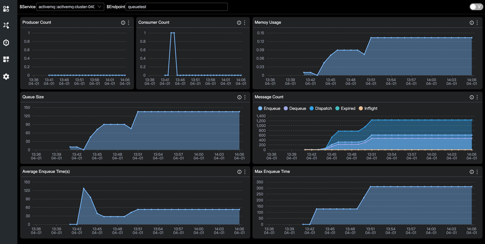

使用 SkyWalking 监控 ActiveMQ

引言
Apache ActiveMQ Classic 是一个流行且功能强大的开源消息传递和集成模式服务器。始于2004年，逐渐发展成为了一个成熟且广泛使用的开源消息中间件，符合Java消息服务（JMS）规范。 发展至今，凭借其稳定性和广泛的特性支持，仍然拥有一定数量的中小型企业的使用者。其高性能版本 Apache Artemis 目前处于快速发展阶段，也受到了 ActiveMQ 现有使用者的关注。
ActiveMQ 对 JMX(Java Management Extensions) 有广泛的支持，允许通过 JMX MBean 监视和控制代理的行为。
开启JMX之后，就可以使用 JAVA 自带的 jconsole 工具或者 VisualVM 等工具直观查看指标。此外也可以通过一些 Collector 组件，将 JMX 风格的数据转换为 prometheus 风格的数据，适配更多查询与展示工具。
OpenTelemetry 作为业界公认的标准化解决方案，可为分布式系统提供一致且可互操作的遥测数据收集、传输和分析能力，这里也主要借助它实现数据的采集和传输。
它虽然可以直接接受 JMX 类型的数据，但是关于采集 ActiveMQ 的 JMX 指标并不在标准库，存在部分版本不兼容，因此本文采用两步：将 JMX 数据转换为 Prometheus 风格的指标数据，再使用 OpenTelemetry 传递。
SkyWalking 作为一站式的分布式系统监控解决方案，接纳来自 ActiveMQ 的指标数据，并提供基础的指标监控面板。
服务部署
请准备以下服务
- SkyWalking OAP, v10.0+。
- ActiveMQ v6.0.X+。
- JMX Exporter v0.20.0。如果你使用docker，参考使用 bitnami/jmx-exporter。
- OpenTelmetry-Collector v0.92.0。
服务准备
以下通过 SkyWalking OAP 单节点、ActiveMQ 2个单节点服务的部署方式介绍。JMX Exporter 采用推荐的 agent 方式启动。
配置流程
- 在 ActiveMQ 中开启JMX，其中 JMX 远程端口默认1616，如需修改可通过
ACTIVEMQ_SUNJMX_START参数调整。 - 设置 Exporter：
- 如果采用推荐的 Agent 方式启动，需要追加启动参数
-DACTIVEMQ_OPTS=-javaagent:{activemqPath}/bin/jmx_prometheus_javaagent-0.20.0.jar=2345:{activemqPath}/conf/config.yaml - 如果采用单独服务的方式启动，可以参考这里独立部署 Exporter 服务。
- 其中
2345为开放的 HTTP 端口可自定义。最终可通过访问http://localhost:2345/metrics查询到 JMX 的指标数据。
- 如果采用推荐的 Agent 方式启动，需要追加启动参数
采用 Agent Exporter 方式的 docker-compose.yml 配置样例：
version: '3.8'
services:
amq1:
image: apache/activemq-classic:latest
container_name: amq1
hostname: amq1
volumes:
- ~/activemq1/conf/activemq.xml:/opt/apache-activemq/conf/activemq.xml
- ~/activemq1/bin/jmx_prometheus_javaagent-0.20.0.jar:/opt/apache-activemq/bin/jmx_prometheus_javaagent-0.20.0.jar
- ~/activemq1/conf/config.yaml:/opt/apache-activemq/conf/config.yaml
ports:
- "61616:61616"
- "8161:8161"
- "2345:2345"
environment:
ACTIVEMQ_OPTS: "-javaagent:/opt/apache-activemq/bin/jmx_prometheus_javaagent-0.20.0.jar=2345:/opt/apache-activemq/conf/config.yaml"
ACTIVEMQ_BROKER_NAME: broker-1
networks:
- amqtest
amq2:
image: apache/activemq-classic:latest
container_name: amq2
hostname: amq2
volumes:
- ~/activemq2/conf/activemq.xml:/opt/apache-activemq/conf/activemq.xml
- ~/activemq2/bin/jmx_prometheus_javaagent-0.20.0.jar:/opt/apache-activemq/bin/jmx_prometheus_javaagent-0.20.0.jar
- ~/activemq2/conf/config.yaml:/opt/apache-activemq/conf/config.yaml
ports:
- "61617:61616"
- "8162:8161"
- "2346:2346"
environment:
ACTIVEMQ_OPTS: "-javaagent:/opt/apache-activemq/bin/jmx_prometheus_javaagent-0.20.0.jar=2346:/opt/apache-activemq/conf/config.yaml"
ACTIVEMQ_BROKER_NAME: broker-2
networks:
- amqtest
otel-collector1:
image: otel/opentelemetry-collector:latest
container_name: otel-collector1
command: [ "--config=/etc/otel-collector-config.yaml" ]
volumes:
- ./otel-collector-config1.yaml:/etc/otel-collector-config.yaml
depends_on:
- amq1
networks:
- amqtest
otel-collector2:
image: otel/opentelemetry-collector:latest
container_name: otel-collector2
command: [ "--config=/etc/otel-collector-config.yaml" ]
volumes:
- ./otel-collector-config2.yaml:/etc/otel-collector-config.yaml
depends_on:
- amq2
networks:
- amqtest
networks:
amqtest:
OpenTelemetry otel-collector-config.yaml 配置样例：
receivers:
prometheus:
config:
scrape_configs:
- job_name: 'activemq-monitoring'
scrape_interval: 30s
static_configs:
- targets: ['amq1:2345']
labels:
cluster: activemq-broker1
processors:
batch:
exporters:
otlp:
endpoint: oap:11800
tls:
insecure: true
service:
pipelines:
metrics:
receivers:
- prometheus
processors:
- batch
exporters:
- otlp
ActiveMQ Exporter config.yaml 配置样例：
---
startDelaySeconds: 10
username: admin
password: activemq
ssl: false
lowercaseOutputName: false
lowercaseOutputLabelNames: false
includeObjectNames: ["org.apache.activemq:*","java.lang:type=OperatingSystem","java.lang:type=GarbageCollector,*","java.lang:type=Threading","java.lang:type=Runtime","java.lang:type=Memory","java.lang:name=*"]
excludeObjectNames: ["org.apache.activemq:type=ColumnFamily,*"]
autoExcludeObjectNameAttributes: true
excludeObjectNameAttributes:
"java.lang:type=OperatingSystem":
- "ObjectName"
"java.lang:type=Runtime":
- "ClassPath"
- "SystemProperties"
rules:
- pattern: ".*"
启动步骤
- 启动
ActiveMQ，Exporter 和服务同时启动。 - 启动
SkyWalking OAP和SkyWalking UI。 - 启动
OpenTelmetry-Collector。
以上步骤执行完成后，节点指标就会定时抓取后推送到 SkyWalking，经过分组聚合后前端页面可查看到 ActiveMQ 的面板数据。
监控指标
监控指标主要分为3类：Cluster 指标、Broker 指标、Destination 指标
- Cluster 指标：主要关注集群的内存使用情况、数据写入与读取速率平均情况、平均与最大的写入时长等。
- Broker 指标：主要关注 Broker 下节点状态、连接数、生产者消费者数量、写入读取速率等。根据集群形式不同，一个Cluster可能包括一个或多个Broker。
- Destination 指标：主要关注 Queue/Topic 下的生产者消费者数量、不同状态消息数量、队列数量、入队时长等。
Cluster 指标
- System Load：[0, 100]的值来反馈系统负载。
- Thread Count：JVM 当前使用的线程数。
- Heap Memory：堆内存的容量一定程度反映服务的处理性能。
- GC：ActiveMQ 在 JVM 中运行，其内存由 Java 的垃圾回收 （GC） 进程管理，GC能直接反映服务的状态。
- Enqueue/Dequeue/Dispatch/Expired Rate：不同状态信息的增长速率能直接反映生产活动。
- Average/Max Enqueue Time：入队的耗时能一定程度影响生产者。
Broker 指标

- Uptime：节点存活时长。
- State：是否为从节点，1=从节点，0=主节点。
- Current Connentions：目前的连接数。
- Current Producer/Consumer Count：目前生产者消费者数量。
- Increased Producer/Consumer Count：增长的生产者消费者数量。
- Enqueue/Dequeue Count： 入队出队数量。
- Enqueue/Dequeue Rate： 入队出队速率。
- Memory Percent Usage：未送达消息使用的内存空间。
- Store Percent Usage： 挂起的持久性消息占用的空间。
- Temp Percent Usage：非持久化消息占用的空间。
- Average/Max Message Size：消息量。
- Queue Size：队列中消息量。
Destination 指标

- Producer/Consumer Count：生产者/消费者数量。
- Queue Size：队列的未消费数量。
- Memory Usage：内存的使用。
- Enqueue/Dequeue/Dispatch/Expired/Inflight Count：不同状态消息数。
- Average/Max Enqueue Time：入队的耗时。
- Average/Max Message Size：消息量。